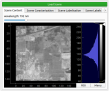

Tutorial - Basics (with GUI)
Discover Main Features
The are 4 main features included in the application. These modules are not completely independent, using them sequentially is recommended for first usages.
Dataset Analysis (only with GUI): for analyzing multi- or hyper-spectral datasets. It includes vizualization of data slices, spectrum analysis, and dataset labeling.
Optical Design: for evaluating and comparing the performances of various optical systems.
Coded Aperture: for generating various patterns and corresponding filtering cubes.
Acquisition: for simulating the acquisition process of coded images
Feature A : Dataset Analysis
The Dataset analysis tab is used to load & display datasets characteristics.
1. Settings
Located on the left side of the application window.
Includes:
- datasets directorypath to the datasets directory. All datasets be stored here.
ATTENTION : click on the reload datasets button if you change the datasets directory path
dataset name : a ComboBox displaying the datasets available in the selected directory
- loaded dataset dimensionsThese values are displayed once the dataset is loaded
dimension along X : dimension of the dataset in the X direction (main spectral dispersion direction)
dimension along Y : dimension of the dataset in the Y direction (perpendicular to spectral dispersion direction)
number of spectral bands : number of spectral bands in the loaded dataset
minimum wavelength : minimum wavelength, usually corresponds to the spectral band n°0
maximum wavelength : maximum wavelength, usually corresponds to the last spectral band
3. Display windows
Located on the right side of the application window.
Once a dataset is loaded, one can inspect the spatial and spectral content of the dataset.
Hyperspectral cube
By moving the slider, you choose the spectral plane to be displayed.
Compare Spectra
Labelisation map
Labelisation Histogram

Feature B : Optical Design
The Optical Design tab is used for quick evaluation of the optical system characteristics (spectral dispersion & distortions).
1. System Settings
Located on the left side of the application window.
Includes:
- infos:
system name: name of the studied system
system architecture: All parameters that define the optical system and thus the spatial/spectral filtering
system type
propagation type : model used for evaluating the spatial/spectral filtering
focal lens F [in micrometers]
- dispersive element:
type: Prism or Grating
A (only when prism is selected): apex angle of the prism [in degrees]
m (only when grating is selected): considered order of diffraction [no units]
G (only when grating is selected): grating lines density [lines/mm]
delta alpha c [in degrees]
delta beta c [in degrees]
wavelength center [in nm]
detector: parameters that define the detector grid
SLM: parameters that define the mask grid
spectral range: the spectral boundaries of the system and the number of spectral bands to consider
3. Display
Located on the right side of the application window. It can be used to analyse the mask grid object and its images in the detector plane.
Coded aperture grid
Propagated coded aperture grid
Spectral images of the input coded aperture grid for the minimum, maximum, and center wavelength.
ATTENTION: center wavelength (605 nm on the given example) is different from the system architecture center wavelength
Distortion maps
Get qualitative and quantitative distortion data:

Feature C : Pattern generation
The Coded Aperture tab is used for designing patterns and generating associated filtering cube.
1. Patterns Settings
Located on the left side of the application window.
The patterns characteristics depend on the chosen pattern type.
Available patterns:
- slit:only one column of the coded aperture is open (perpendicular to the spectral dispersion), thus generating a spectral gradient type filter.
slit position: relative to the center column between -100 and 100 coded aperture elements
slit width: between 1 and 30 coded aperture elements.
random: random noise pattern with a normal law
blue noise: random noise pattern with boosted high frequencies
custon h5 pattern: custom pattern that should be a h5 file with a container named “pattern”. Once loaded, the pattern is cropped to fit SLM dimensions
2. Generate pattern
By clicking on this button, a 2D array representing a coded aperture pattern is generated through pattern generation functions contained in the functions_patterns_generation.py file.
4. Display Pattern and Filtering Cube
Located on the right side of the application window.
Pattern
Shows the generated (or loaded) pattern:

Filtering Cube, slice by slice
Shows the corresponding filtering cube. By moving the slider, one can inspect the filtering cube slice by slice:

Feature D : Acquisition
The Acquisition tab is used to generate compressed measurements given: a dataset and a filtering cube.
Note that the dataset is:
cropped in the spatial dimensions to fit the filtering cube sampling (detector dimensions).
interpolated in the spectral dimension according to the filtering cube sampling.
1. Settings
For now, the GUI only includes one mode: single acquisition.
A Point-spread-function (PSF) can be added for more realism. For now, each slice of the filtered scene is convolved by the same kernel. A wavelength-dependent PSF will be added in the future.
3. Display measurements
compressed measurements
The image as measured by the detector.
Spectral images
Each slice of the filtered scene.
Panchromatic image
No spatial/spectral filtering, the interpolated scene is simply summed along its spectral dimension.